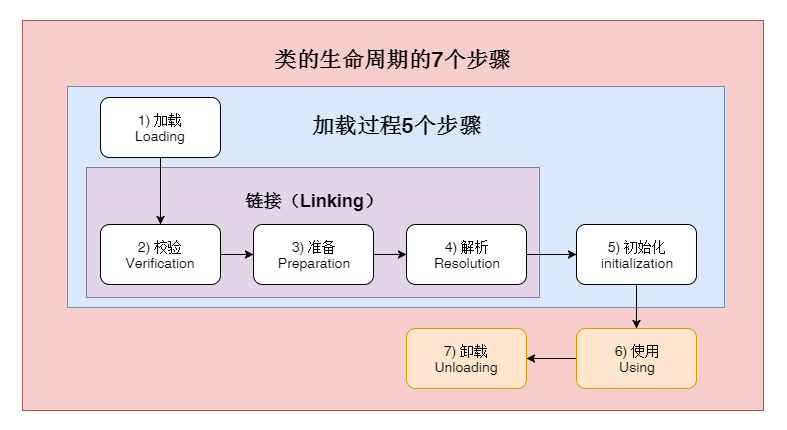
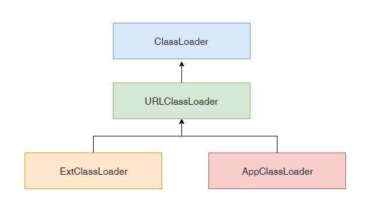
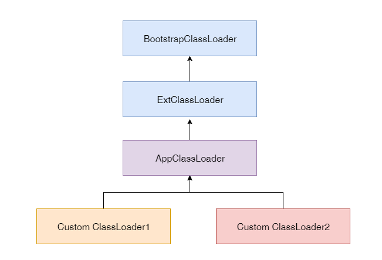

- 01 阅读此专栏的正确姿势.md.html
- 02 环境准备：千里之行，始于足下.md.html
- 03 常用性能指标：没有量化，就没有改进.md.html
- 04 JVM 基础知识：不积跬步，无以至千里.md.html
- 05 Java 字节码技术：不积细流，无以成江河.md.html
- 06 Java 类加载器：山不辞土，故能成其高.md.html
- 07 Java 内存模型：海不辞水，故能成其深.md.html
- 08 JVM 启动参数详解：博观而约取、厚积而薄发.md.html
- 09 JDK 内置命令行工具：工欲善其事，必先利其器.md.html
- 10 JDK 内置图形界面工具：海阔凭鱼跃，天高任鸟飞.md.html
- 11 JDWP 简介：十步杀一人，千里不留行.md.html
- 12 JMX 与相关工具：山高月小，水落石出.md.html
- 13 常见的 GC 算法（GC 的背景与原理）.md.html
- 14 常见的 GC 算法（ParallelCMSG1）.md.html
- 15 Java11 ZGC 和 Java12 Shenandoah 介绍：苟日新、日日新、又日新.md.html
- 16 Oracle GraalVM 介绍：会当凌绝顶、一览众山小.md.html
- 17 GC 日志解读与分析（基础配置）.md.html
- 18 GC 日志解读与分析（实例分析上篇）.md.html
- 19 GC 日志解读与分析（实例分析中篇）.md.html
- 20 GC 日志解读与分析（实例分析下篇）.md.html
- 21 GC 日志解读与分析（番外篇可视化工具）.md.html
- 22 JVM 的线程堆栈等数据分析：操千曲而后晓声、观千剑而后识器.md.html
- 23 内存分析与相关工具上篇（内存布局与分析工具）.md.html
- 24 内存分析与相关工具下篇（常见问题分析）.md.html
- 25 FastThread 相关的工具介绍：欲穷千里目，更上一层楼.md.html
- 26 面临复杂问题时的几个高级工具：它山之石，可以攻玉.md.html
- 27 JVM 问题排查分析上篇（调优经验）.md.html
- 28 JVM 问题排查分析下篇（案例实战）.md.html
- 29 GC 疑难情况问题排查与分析（上篇）.md.html
- 30 GC 疑难情况问题排查与分析（下篇）.md.html
- 31 JVM 相关的常见面试问题汇总：运筹策帷帐之中，决胜于千里之外.md.html
- 32 应对容器时代面临的挑战：长风破浪会有时、直挂云帆济沧海.md.html
06 Java 类加载器：山不辞土，故能成其高
前面我们学习了 Java 字节码，写好的代码经过编译变成了字节码，并且可以打包成 Jar 文件。
然后就可以让 JVM 去加载需要的字节码，变成持久代/元数据区上的 Class 对象，接着才会执行我们的程序逻辑。
我们可以用 Java 命令指定主启动类，或者是 Jar 包，通过约定好的机制，JVM 就会自动去加载对应的字节码（可能是 class 文件，也可能是 Jar 包）。
我们知道 Jar 包打开后实际上就等价于一个文件夹，里面有很多 class 文件和资源文件，但是为了方便就打包成 zip 格式。 当然解压了之后照样可以直接用 java 命令来执行。
$ java Hello
或者把 Hello.class 和依赖的其他文件一起打包成 jar 文件:
示例 1: 将 class 文件和 java 源文件归档到一个名为 hello.jar 的档案中:
jar cvf hello.jar Hello.class Hello.java示例 2: 归档的同时，通过e选项指定 jar 的启动类Hello:jar cvfe hello.jar Hello Hello.class Hello.java
然后通过 -jar 选项来执行jar包:
$ java -jar hello.jar
当然我们回过头来还可以把 jar 解压了，再用上面的 java 命令来运行。
运行 java 程序的第一步就是加载 class 文件/或输入流里面包含的字节码。
- 类的生命周期和加载过程
- 类加载时机
- 类加载机制
- 自定义类加载器示例
- 一些实用技巧
- 如何排查找不到 Jar 包的问题？
- 如何排查类的方法不一致的问题？
- 怎么看到加载了哪些类，以及加载顺序？
- 怎么调整或修改 ext 和本地加载路径？
- 怎么运行期加载额外的 jar 包或者 class 呢？
按照 Java 语言规范和 Java 虚拟机规范的定义, 我们用 “类加载(Class Loading)” 来表示: 将 class/interface 名称映射为 Class 对象的一整个过程。 这个过程还可以划分为更具体的阶段: 加载，链接和初始化(loading, linking and initializing)。
那么加载 class 的过程中到底发生了些什么呢？我们来详细看看。
5.1 类的生命周期和加载过程

一个类在 JVM 里的生命周期有 7 个阶段，分别是加载（Loading）、验证（Verification）、准备（Preparation）、解析（Resolution）、初始化（Initialization）、使用（Using）、卸载（Unloading）。
其中前五个部分（加载，验证，准备，解析，初始化）统称为类加载，下面我们就分别来说一下这五个过程。
1）加载 加载阶段也可以称为“装载”阶段。 这个阶段主要的操作是： 根据明确知道的 class 完全限定名, 来获取二进制 classfile 格式的字节流，简单点说就是找到文件系统中/jar 包中/或存在于任何地方的“class 文件”。 如果找不到二进制表示形式，则会抛出 NoClassDefFound 错误。
装载阶段并不会检查 classfile 的语法和格式。 类加载的整个过程主要由 JVM 和 Java 的类加载系统共同完成， 当然具体到 loading 阶段则是由 JVM 与具体的某一个类加载器（java.lang.classLoader）协作完成的。
2）校验 链接过程的第一个阶段是 校验，确保 class 文件里的字节流信息符合当前虚拟机的要求，不会危害虚拟机的安全。
校验过程检查 classfile 的语义，判断常量池中的符号，并执行类型检查， 主要目的是判断字节码的合法性，比如 magic number, 对版本号进行验证。 这些检查过程中可能会抛出 VerifyError， ClassFormatError 或 UnsupportedClassVersionError。
因为 classfile 的验证属是链接阶段的一部分，所以这个过程中可能需要加载其他类，在某个类的加载过程中，JVM 必须加载其所有的超类和接口。
如果类层次结构有问题（例如，该类是自己的超类或接口,死循环了），则 JVM 将抛出 ClassCircularityError。 而如果实现的接口并不是一个 interface，或者声明的超类是一个 interface，也会抛出 IncompatibleClassChangeError。
3）准备
然后进入准备阶段，这个阶段将会创建静态字段, 并将其初始化为标准默认值(比如null或者0 值)，并分配方法表，即在方法区中分配这些变量所使用的内存空间。
请注意，准备阶段并未执行任何 Java 代码。
例如：
public static int i = 1；
在准备阶段i的值会被初始化为 0，后面在类初始化阶段才会执行赋值为 1；但是下面如果使用 final 作为静态常量，某些 JVM 的行为就不一样了：
public static final int i = 1；对应常量 i，在准备阶段就会被赋值 1，其实这样还是比较 puzzle，例如其他语言（C#）有直接的常量关键字 const，让告诉编译器在编译阶段就替换成常量，类似于宏指令，更简单。
4）解析 然后进入可选的解析符号引用阶段。 也就是解析常量池，主要有以下四种：类或接口的解析、字段解析、类方法解析、接口方法解析。
简单的来说就是我们编写的代码中，当一个变量引用某个对象的时候，这个引用在 .class 文件中是以符号引用来存储的（相当于做了一个索引记录）。
在解析阶段就需要将其解析并链接为直接引用（相当于指向实际对象）。如果有了直接引用，那引用的目标必定在堆中存在。
加载一个 class 时, 需要加载所有的 super 类和 super 接口。
5）初始化 JVM 规范明确规定, 必须在类的首次“主动使用”时才能执行类初始化。
初始化的过程包括执行：
- 类构造器方法
- static 静态变量赋值语句
- static 静态代码块
如果是一个子类进行初始化会先对其父类进行初始化，保证其父类在子类之前进行初始化。所以其实在 java 中初始化一个类，那么必然先初始化过 java.lang.Object 类，因为所有的 java 类都继承自 java.lang.Object。
只要我们尊重语言的语义，在执行下一步操作之前完成 装载，链接和初始化这些步骤，如果出错就按照规定抛出相应的错误，类加载系统完全可以根据自己的策略，灵活地进行符号解析等链接过程。 为了提高性能，HotSpot JVM 通常要等到类初始化时才去装载和链接类。 因此，如果 A 类引用了 B 类，那么加载 A 类并不一定会去加载 B 类（除非需要进行验证）。 主动对 B 类执行第一条指令时才会导致 B 类的初始化，这就需要先完成对 B 类的装载和链接。
5.2 类加载时机
了解了类的加载过程，我们再看看类的初始化何时会被触发呢？JVM 规范枚举了下述多种触发情况：
- 当虚拟机启动时，初始化用户指定的主类，就是启动执行的 main 方法所在的类；
- 当遇到用以新建目标类实例的 new 指令时，初始化 new 指令的目标类，就是 new 一个类的时候要初始化；
- 当遇到调用静态方法的指令时，初始化该静态方法所在的类；
- 当遇到访问静态字段的指令时，初始化该静态字段所在的类；
- 子类的初始化会触发父类的初始化；
- 如果一个接口定义了 default 方法，那么直接实现或者间接实现该接口的类的初始化，会触发该接口的初始化；
- 使用反射 API 对某个类进行反射调用时，初始化这个类，其实跟前面一样，反射调用要么是已经有实例了，要么是静态方法，都需要初始化；
- 当初次调用 MethodHandle 实例时，初始化该 MethodHandle 指向的方法所在的类。
同时以下几种情况不会执行类初始化：
- 通过子类引用父类的静态字段，只会触发父类的初始化，而不会触发子类的初始化。
- 定义对象数组，不会触发该类的初始化。
- 常量在编译期间会存入调用类的常量池中，本质上并没有直接引用定义常量的类，不会触发定义常量所在的类。
- 通过类名获取 Class 对象，不会触发类的初始化，Hello.class 不会让 Hello 类初始化。
- 通过 Class.forName 加载指定类时，如果指定参数 initialize 为 false 时，也不会触发类初始化，其实这个参数是告诉虚拟机，是否要对类进行初始化。Class.forName(“jvm.Hello”)默认会加载 Hello 类。
- 通过 ClassLoader 默认的 loadClass 方法，也不会触发初始化动作（加载了，但是不初始化）。
示例: 诸如 Class.forName(), classLoader.loadClass() 等 Java API, 反射API, 以及 JNI_FindClass 都可以启动类加载。 JVM 本身也会进行类加载。 比如在 JVM 启动时加载核心类，java.lang.Object, java.lang.Thread 等等。
5.3 类加载器机制
类加载过程可以描述为“通过一个类的全限定名 a.b.c.XXClass 来获取描述此类的 Class 对象”，这个过程由“类加载器（ClassLoader）”来完成。这样的好处在于，子类加载器可以复用父加载器加载的类。系统自带的类加载器分为三种：
- 启动类加载器（BootstrapClassLoader）
- 扩展类加载器（ExtClassLoader）
- 应用类加载器（AppClassLoader）
一般启动类加载器是由 JVM 内部实现的，在 Java 的 API 里无法拿到，但是我们可以侧面看到和影响它（后面的内容会演示）。后 2 种类加载器在 Oracle Hotspot JVM 里，都是在中sun.misc.Launcher定义的，扩展类加载器和应用类加载器一般都继承自URLClassLoader类，这个类也默认实现了从各种不同来源加载 class 字节码转换成 Class 的方法。

- 启动类加载器（bootstrap class loader）: 它用来加载 Java 的核心类，是用原生 C++ 代码来实现的，并不继承自 java.lang.ClassLoader（负责加载JDK中jre/lib/rt.jar里所有的class）。它可以看做是 JVM 自带的，我们再代码层面无法直接获取到启动类加载器的引用，所以不允许直接操作它， 如果打印出来就是个
null。举例来说，java.lang.String 是由启动类加载器加载的，所以 String.class.getClassLoader() 就会返回 null。但是后面可以看到可以通过命令行参数影响它加载什么。 - 扩展类加载器（extensions class loader）：它负责加载 JRE 的扩展目录，lib/ext 或者由 java.ext.dirs 系统属性指定的目录中的 JAR 包的类，代码里直接获取它的父类加载器为 null（因为无法拿到启动类加载器）。
- 应用类加载器（app class loader）：它负责在 JVM 启动时加载来自 Java 命令的 -classpath 或者 -cp 选项、java.class.path 系统属性指定的 jar 包和类路径。在应用程序代码里可以通过 ClassLoader 的静态方法 getSystemClassLoader() 来获取应用类加载器。如果没有特别指定，则在没有使用自定义类加载器情况下，用户自定义的类都由此加载器加载。
此外还可以自定义类加载器。如果用户自定义了类加载器，则自定义类加载器都以应用类加载器作为父加载器。应用类加载器的父类加载器为扩展类加载器。这些类加载器是有层次关系的，启动加载器又叫根加载器，是扩展加载器的父加载器，但是直接从 ExClassLoader 里拿不到它的引用，同样会返回 null。

类加载机制有三个特点：
- 双亲委托：当一个自定义类加载器需要加载一个类，比如 java.lang.String，它很懒，不会一上来就直接试图加载它，而是先委托自己的父加载器去加载，父加载器如果发现自己还有父加载器，会一直往前找，这样只要上级加载器，比如启动类加载器已经加载了某个类比如 java.lang.String，所有的子加载器都不需要自己加载了。如果几个类加载器都没有加载到指定名称的类，那么会抛出 ClassNotFountException 异常。
- 负责依赖：如果一个加载器在加载某个类的时候，发现这个类依赖于另外几个类或接口，也会去尝试加载这些依赖项。
- 缓存加载：为了提升加载效率，消除重复加载，一旦某个类被一个类加载器加载，那么它会缓存这个加载结果，不会重复加载。
5.4 自定义类加载器示例
同时我们可以自行实现类加载器来加载其他格式的类，对加载方式、加载数据的格式进行自定义处理，只要能通过 classloader 返回一个 Class 实例即可。这就大大增强了加载器灵活性。比如我们试着实现一个可以用来处理简单加密的字节码的类加载器，用来保护我们的 class 字节码文件不被使用者直接拿来破解。
我们先来看看我们希望加载的一个 Hello 类：
package jvm;
public class Hello {
static {
System.out.println("Hello Class Initialized!");
}
}
这个 Hello 类非常简单，就是在自己被初始化的时候，打印出来一句“Hello Class Initialized!”。假设这个类的内容非常重要，我们不想把编译到得到的 Hello.class 给别人，但是我们还是想别人可以调用或执行这个类，应该怎么办呢？一个简单的思路是，我们把这个类的 class 文件二进制作为字节流先加密一下，然后尝试通过自定义的类加载器来加载加密后的数据。为了演示简单，我们使用 jdk 自带的 Base64 算法，把字节码加密成一个文本。在下面这个例子里，我们实现一个 HelloClassLoader，它继承自 ClassLoader 类，但是我们希望它通过我们提供的一段 Base64 字符串，来还原出来，并执行我们的 Hello 类里的打印一串字符串的逻辑。
package jvm;
import java.util.Base64;
public class HelloClassLoader extends ClassLoader {
public static void main(String[] args) {
try {
new HelloClassLoader().findClass("jvm.Hello").newInstance(); // 加载并初始化Hello类
} catch (ClassNotFoundException e) {
e.printStackTrace();
} catch (IllegalAccessException e) {
e.printStackTrace();
} catch (InstantiationException e) {
e.printStackTrace();
}
}
@Override
protected Class<?> findClass(String name) throws ClassNotFoundException {
String helloBase64 = "yv66vgAAADQAHwoABgARCQASABMIABQKABUAFgcAFwcAGAEABjxpbml0PgEAAygpVgEABENvZGUBAA9MaW5lTnVtYmVyVGFibGUBABJMb2N" +
"hbFZhcmlhYmxlVGFibGUBAAR0aGlzAQALTGp2bS9IZWxsbzsBAAg8Y2xpbml0PgEAClNvdXJjZUZpbGUBAApIZWxsby5qYXZhDAAHAAgHABkMABoAGwEAGEhlb" +
"GxvIENsYXNzIEluaXRpYWxpemVkIQcAHAwAHQAeAQAJanZtL0hlbGxvAQAQamF2YS9sYW5nL09iamVjdAEAEGphdmEvbGFuZy9TeXN0ZW0BAANvdXQBABVMamF2" +
"YS9pby9QcmludFN0cmVhbTsBABNqYXZhL2lvL1ByaW50U3RyZWFtAQAHcHJpbnRsbgEAFShMamF2YS9sYW5nL1N0cmluZzspVgAhAAUABgAAAAAAAgABAAcACA" +
"ABAAkAAAAvAAEAAQAAAAUqtwABsQAAAAIACgAAAAYAAQAAAAMACwAAAAwAAQAAAAUADAANAAAACAAOAAgAAQAJAAAAJQACAAAAAAAJsgACEgO2AASxAAAAAQAK" +
"AAAACgACAAAABgAIAAcAAQAPAAAAAgAQ";
byte[] bytes = decode(helloBase64);
return defineClass(name,bytes,0,bytes.length);
}
public byte[] decode(String base64){
return Base64.getDecoder().decode(base64);
}
}
直接执行这个类：
$ java jvm.HelloClassLoader Hello Class Initialized!
可以看到达到了我们的目的，成功执行了Hello类的代码，但是完全不需要有Hello这个类的class文件。此外，需要说明的是两个没有关系的自定义类加载器之间加载的类是不共享的（只共享父类加载器，兄弟之间不共享），这样就可以实现不同的类型沙箱的隔离性，我们可以用多个类加载器，各自加载同一个类的不同版本，大家可以相互之间不影响彼此，从而在这个基础上可以实现类的动态加载卸载，热插拔的插件机制等，具体信息大家可以参考OSGi等模块化技术。
5.5 一些实用技巧
1）如何排查找不到Jar包的问题？
有时候我们会面临明明已经把某个jar加入到了环境里，可以运行的时候还是找不到。那么我们有没有一种方法，可以直接看到各个类加载器加载了哪些jar，以及把哪些路径加到了classpath里？答案是肯定的，代码如下：
package jvm;
import java.lang.reflect.Field;
import java.net.URL;
import java.net.URLClassLoader;
import java.util.ArrayList;
public class JvmClassLoaderPrintPath {
public static void main(String[] args) {
// 启动类加载器
URL[] urls = sun.misc.Launcher.getBootstrapClassPath().getURLs();
System.out.println("启动类加载器");
for(URL url : urls) {
System.out.println(" ==> " +url.toExternalForm());
}
// 扩展类加载器
printClassLoader("扩展类加载器", JvmClassLoaderPrintPath.class.getClassLoader().getParent());
// 应用类加载器
printClassLoader("应用类加载器", JvmClassLoaderPrintPath.class.getClassLoader());
}
public static void printClassLoader(String name, ClassLoader CL){
if(CL != null) {
System.out.println(name + " ClassLoader -> " + CL.toString());
printURLForClassLoader(CL);
}else{
System.out.println(name + " ClassLoader -> null");
}
}
public static void printURLForClassLoader(ClassLoader CL){
Object ucp = insightField(CL,"ucp");
Object path = insightField(ucp,"path");
ArrayList ps = (ArrayList) path;
for (Object p : ps){
System.out.println(" ==> " + p.toString());
}
}
private static Object insightField(Object obj, String fName) {
try {
Field f = null;
if(obj instanceof URLClassLoader){
f = URLClassLoader.class.getDeclaredField(fName);
}else{
f = obj.getClass().getDeclaredField(fName);
}
f.setAccessible(true);
return f.get(obj);
} catch (Exception e) {
e.printStackTrace();
return null;
}
}
}
代码执行结果如下：
启动类加载器
==> file:/D:/Program%20Files/Java/jdk1.8.0_231/jre/lib/resources.jar
==> file:/D:/Program%20Files/Java/jdk1.8.0_231/jre/lib/rt.jar
==> file:/D:/Program%20Files/Java/jdk1.8.0_231/jre/lib/sunrsasign.jar
==> file:/D:/Program%20Files/Java/jdk1.8.0_231/jre/lib/jsse.jar
==> file:/D:/Program%20Files/Java/jdk1.8.0_231/jre/lib/jce.jar
==> file:/D:/Program%20Files/Java/jdk1.8.0_231/jre/lib/charsets.jar
==> file:/D:/Program%20Files/Java/jdk1.8.0_231/jre/lib/jfr.jar
==> file:/D:/Program%20Files/Java/jdk1.8.0_231/jre/classes
扩展类加载器 ClassLoader -> sun.misc.Launcher[email protected]
==> file:/D:/Program%20Files/Java/jdk1.8.0_231/jre/lib/ext/access-bridge-64.jar
==> file:/D:/Program%20Files/Java/jdk1.8.0_231/jre/lib/ext/cldrdata.jar
==> file:/D:/Program%20Files/Java/jdk1.8.0_231/jre/lib/ext/dnsns.jar
==> file:/D:/Program%20Files/Java/jdk1.8.0_231/jre/lib/ext/jaccess.jar
==> file:/D:/Program%20Files/Java/jdk1.8.0_231/jre/lib/ext/jfxrt.jar
==> file:/D:/Program%20Files/Java/jdk1.8.0_231/jre/lib/ext/localedata.jar
==> file:/D:/Program%20Files/Java/jdk1.8.0_231/jre/lib/ext/nashorn.jar
==> file:/D:/Program%20Files/Java/jdk1.8.0_231/jre/lib/ext/sunec.jar
==> file:/D:/Program%20Files/Java/jdk1.8.0_231/jre/lib/ext/sunjce_provider.jar
==> file:/D:/Program%20Files/Java/jdk1.8.0_231/jre/lib/ext/sunmscapi.jar
==> file:/D:/Program%20Files/Java/jdk1.8.0_231/jre/lib/ext/sunpkcs11.jar
==> file:/D:/Program%20Files/Java/jdk1.8.0_231/jre/lib/ext/zipfs.jar
应用类加载器 ClassLoader -> [email protected]
==> file:/D:/git/studyjava/build/classes/java/main/
==> file:/D:/git/studyjava/build/resources/main
从打印结果，我们可以看到三种类加载器各自默认加载了哪些 jar 包和包含了哪些 classpath 的路径。
2）如何排查类的方法不一致的问题？
假如我们确定一个 jar 或者 class 已经在 classpath 里了，但是却总是提示java.lang.NoSuchMethodError，这是怎么回事呢？很可能是加载了错误的或者重复加载了不同版本的 jar 包。这时候，用前面的方法就可以先排查一下，加载了具体什么 jar，然后是不是不同路径下有重复的 class 文件，但是版本不一样。
3）怎么看到加载了哪些类，以及加载顺序？
还是针对上一个问题，假如有两个地方有 Hello.class，一个是新版本，一个是旧的，怎么才能直观地看到他们的加载顺序呢？也没有问题，我们可以直接打印加载的类清单和加载顺序。
只需要在类的启动命令行参数加上-XX:+TraceClassLoading 或者 -verbose 即可，注意需要加载 Java 命令之后，要执行的类名之前，不然不起作用。例如：
$ java -XX:+TraceClassLoading jvm.HelloClassLoader
[Opened D:\Program Files\Java\jre1.8.0_231\lib\rt.jar]
[Loaded java.lang.Object from D:\Program Files\Java\jre1.8.0_231\lib\rt.jar]
[Loaded java.io.Serializable from D:\Program Files\Java\jre1.8.0_231\lib\rt.jar]
[Loaded java.lang.Comparable from D:\Program Files\Java\jre1.8.0_231\lib\rt.jar]
[Loaded java.lang.CharSequence from D:\Program Files\Java\jre1.8.0_231\lib\rt.jar]
[Loaded java.lang.String from D:\Program Files\Java\jre1.8.0_231\lib\rt.jar]
[Loaded java.lang.reflect.AnnotatedElement from D:\Program Files\Java\jre1.8.0_231\lib\rt.jar]
[Loaded java.lang.reflect.GenericDeclaration from D:\Program Files\Java\jre1.8.0_231\lib\rt.jar]
[Loaded java.lang.reflect.Type from D:\Program Files\Java\jre1.8.0_231\lib\rt.jar]
[Loaded java.lang.Class from D:\Program Files\Java\jre1.8.0_231\lib\rt.jar]
[Loaded java.lang.Cloneable from D:\Program Files\Java\jre1.8.0_231\lib\rt.jar]
[Loaded java.lang.ClassLoader from D:\Program Files\Java\jre1.8.0_231\lib\rt.jar]
[Loaded java.lang.System from D:\Program Files\Java\jre1.8.0_231\lib\rt.jar]
// ....... 此处省略了100多条类加载信息
[Loaded jvm.Hello from __JVM_DefineClass__]
[Loaded java.util.concurrent.ConcurrentHashMap$ForwardingNode from D:\Program Files\Java\jre1.8.0_231\lib\rt.jar]
Hello Class Initialized!
[Loaded java.lang.Shutdown from D:\Program Files\Java\jre1.8.0_231\lib\rt.jar]
[Loaded java.lang.Shutdown$Lock from D:\Program Files\Java\jre1.8.0_231\lib\rt.jar]
上面的信息，可以很清楚的看到类的加载先后顺序，以及是从哪个 jar 里加载的，这样排查类加载的问题非常方便。
4）怎么调整或修改 ext 和本地加载路径？
从前面的例子我们可以看到，假如什么都不设置，直接执行 java 命令，默认也会加载非常多的 jar 包，怎么可以自定义加载哪些 jar 包呢？比如我的代码很简单，只加载 rt.jar 行不行？答案是肯定的。
$ java -Dsun.boot.class.path="D:\Program Files\Java\jre1.8.0_231\lib\rt.jar" -Djava.ext.dirs= jvm.JvmClassLoaderPrintPath
启动类加载器
==> file:/D:/Program%20Files/Java/jdk1.8.0_231/jre/lib/rt.jar
扩展类加载器 ClassLoader -> [email protected]
应用类加载器 ClassLoader -> [email protected]
==> file:/D:/git/studyjava/build/classes/java/main/
==> file:/D:/git/studyjava/build/resources/main
我们看到启动类加载器只加载了 rt.jar，而扩展类加载器什么都没加载，这就达到了我们的目的。
其中命令行参数-Dsun.boot.class.path表示我们要指定启动类加载器加载什么，最基础的东西都在 rt.jar 这个包了里，所以一般配置它就够了。需要注意的是因为在 windows 系统默认 JDK 安装路径有个空格，所以需要把整个路径用双引号括起来，如果路径没有空格，或是 Linux/Mac 系统，就不需要双引号了。
参数-Djava.ext.dirs表示扩展类加载器要加载什么，一般情况下不需要的话可以直接配置为空即可。
5）怎么运行期加载额外的 jar 包或者 class 呢？
有时候我们在程序已经运行了以后，还是想要再额外的去加载一些 jar 或类，需要怎么做呢？
简单说就是不使用命令行参数的情况下，怎么用代码来运行时改变加载类的路径和方式。假如说，在d:/app/jvm路径下，有我们刚才使用过的 Hello.class 文件，怎么在代码里能加载这个 Hello 类呢？
两个办法，一个是前面提到的自定义 ClassLoader 的方式，还有一个就是直接在当前的应用类加载器里，使用 URLClassLoader 类的方法 addURL，不过这个方法是 protected 的，需要反射处理一下，然后又因为程序在启动时并没有显示加载 Hello 类，所以在添加完了 classpath 以后，没法直接显式初始化，需要使用 Class.forName 的方式来拿到已经加载的Hello类（Class.forName("jvm.Hello")默认会初始化并执行静态代码块）。代码如下：
package jvm;
import java.lang.reflect.InvocationTargetException;
import java.lang.reflect.Method;
import java.net.MalformedURLException;
import java.net.URL;
import java.net.URLClassLoader;
public class JvmAppClassLoaderAddURL {
public static void main(String[] args) {
String appPath = "file:/d:/app/";
URLClassLoader urlClassLoader = (URLClassLoader) JvmAppClassLoaderAddURL.class.getClassLoader();
try {
Method addURL = URLClassLoader.class.getDeclaredMethod("addURL", URL.class);
addURL.setAccessible(true);
URL url = new URL(appPath);
addURL.invoke(urlClassLoader, url);
Class.forName("jvm.Hello"); // 效果跟Class.forName("jvm.Hello").newInstance()一样
} catch (Exception e) {
e.printStackTrace();
}
}
}
执行以下，结果如下：
$ java JvmAppClassLoaderAddURL Hello Class Initialized!
结果显示 Hello 类被加载，成功的初始化并执行了其中的代码逻辑。